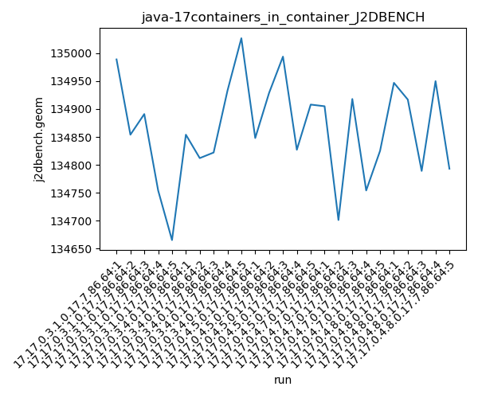
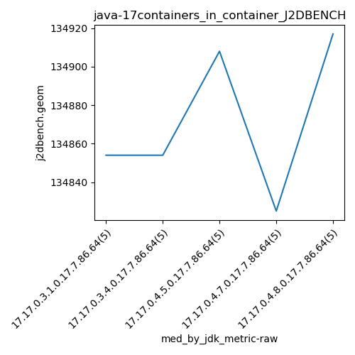
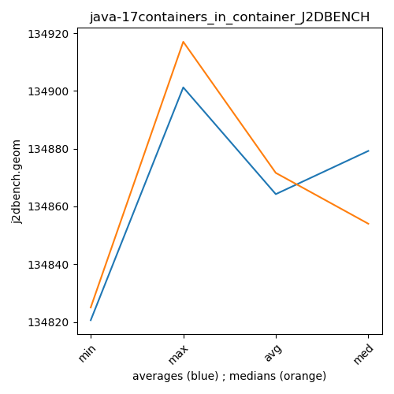

java-17 J2DBENCH
Context at bottom
/home/jvanek/git/benchmarks-in-nested-virtualisation-toolchain/final_results/containers_in_container_results/containers_in_container_DACAPO
java-17
J2DBENCH
/home/jvanek/git/benchmarks-in-nested-virtualisation-toolchain/final_results/containers_in_container_results/containers_in_container_JMH
java-17
J2DBENCH
/home/jvanek/git/benchmarks-in-nested-virtualisation-toolchain/final_results/containers_in_container_results/containers_in_container_SPECJBB
java-17
J2DBENCH
/home/jvanek/git/benchmarks-in-nested-virtualisation-toolchain/final_results/containers_in_container_results/containers_in_container_RADARGUNs1
java-17
J2DBENCH
/home/jvanek/git/benchmarks-in-nested-virtualisation-toolchain/final_results/containers_in_container_results/containers_in_container_J2DBENCH
java-17
J2DBENCH
containers_in_container_J2DBENCH
final score
Expected number of java-17 JDKs: 9
1st avgmed_alljdks_metric:
/home/jvanek/git/benchmarks-in-nested-virtualisation-toolchain/final_results/result_processing.py /home/jvanek/git/benchmarks-in-nested-virtualisation-toolchain/final_results/containers_in_container_results/containers_in_container_J2DBENCH j2dbench.geom False
values: [134989, 134854, 134891, 134754, 134665, 134854, 134812, 134822, 134933, 135027, 134848, 134929, 134994, 134827, 134908, 134905, 134701, 134918, 134754, 134825, 134947, 134917, 134789, 134950, 134793, 134528, 134718, 134751, 134558, 134806, 134948, 134814, 135110, 134409, 134146, 134361, 134212, 134605, 134336, 134201, 134529, 134517, 134456, 134391, 134396]

Expected number of iterations: 5
final number of values: 45 out of 45
Pass rate: 100.0%
values: (134146, 135110, 134719.95555555556, 134806)

** accuracy from all jdks and runs
more is better
MIN: 134146
MAX: 135110
AVG: 134719.95555555556
MED: 134806
Relative differences 1:
MIN-MAX: 1.0 %
MIN-AVG: 0.0 %
MIN-MED: 0.0 %
MAX-MIN: -1.0 %
MAX-AVG: -0.0 %
MAX-MED: -0.0 %
AVG-MED: 0.0 %
stored to java-17.properties. sort | uniq that!
2nd avgmed_by_jdk_metric:
values: [134830.6, 134889.6, 134901.2, 134820.6, 134879.2, 134672.2, 134685.4, 134343.0, 134457.8]

values: [134854, 134854, 134908, 134825, 134917, 134718, 134814, 134336, 134456]

values: (134343.0, 134901.2, 134719.95555555556, 134820.6)
values: (134336, 134917, 134742.44444444444, 134825)

** accuracy from all jdks where runs were avged
more is better
MIN: 134343.0
MAX: 134901.2
AVG: 134719.95555555556
MED: 134820.6
Relative differences 1:
MIN-MAX: 0.0 %
MIN-AVG: 0.0 %
MIN-MED: 0.0 %
MAX-MIN: -0.0 %
MAX-AVG: -0.0 %
MAX-MED: -0.0 %
AVG-MED: 0.0 %
stored to java-17.properties. sort | uniq that!
** accuracy from all jdks where runs were medianed
more is better
MIN: 134336
MAX: 134917
AVG: 134742.44444444444
MED: 134825
Relative differences 1:
MIN-MAX: 0.0 %
MIN-AVG: 0.0 %
MIN-MED: 0.0 %
MAX-MIN: -0.0 %
MAX-AVG: -0.0 %
MAX-MED: -0.0 %
AVG-MED: 0.0 %
stored to java-17.properties. sort | uniq that!
/home/jvanek/git/benchmarks-in-nested-virtualisation-toolchain/final_results/containers_in_container_results/containers_in_container_RADARGUNs3
java-17
J2DBENCH
pass rates:
containers_in_container_J2DBENCH=100.0%
Context:
- containers_in_container_results
- J2DBENCH